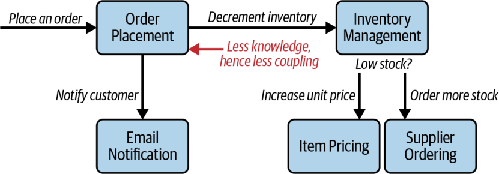
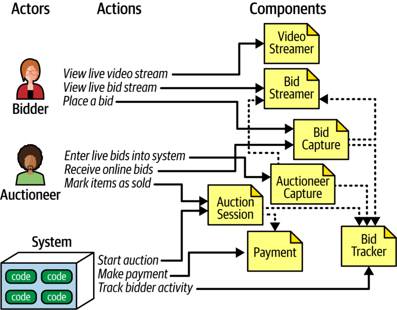

به بیشترِ معماران توصیه میشود که در طراحیِ سیستم برای کوپلینگ سست بکوشند. کوپلینگِ کمتر میانِ مؤلفهها یا سرویسها، نگهداریِ سیستم را آسانتر، آزمونش را سادهتر و استقرارش را کمخطرتر میکند. همچنین قابلیت اطمینانِ کلیِ سیستم را افزایش میدهد، زیرا تغییرات بر مؤلفههای کمتری اثر میگذارند و فرصتهای کمتری برای خطا پدید میآید.
یکی از تکنیکهای ساختنِ سیستمهای با کوپلینگِ سست، قانونِ Demeter (Law of Demeter) نام دارد که اصلِ کمترین دانش (principle of least knowledge) نیز خوانده میشود. در اسطورههای یونانی، الههٔ Demeter همهٔ غلهٔ جهان را تولید میکرد، اما هیچ نمیدانست مردم با آن چه میکنند (به دامها میخورانند، نان میپزند و جز آن). Demeter در عمل از بقیهٔ جهان جدا (decoupled) بود.
قانونِ Demeter میگوید: یک مؤلفه یا سرویس باید دانشِ محدودی از مؤلفهها یا سرویسهای دیگر داشته باشد. هرچند این گفته ممکن است سادهانگارانه و بدیهی به نظر برسد، چنین نیست. بگذارید منظورمان را نشان دهیم.
مؤلفهها و ارتباطهای متناظرشان را که در شکل ۸-۱۴ نشان داده شدهاند در نظر بگیرید. پس از پذیرشِ سفارشِ مشتری، مؤلفهٔ Order Placement باید به مؤلفهٔ Inventory Management بگوید که موجودیِ انبار را کاهش دهد. اگر موجودی بیش از حد پایین بیاید، مؤلفهٔ Order Placement باید دو کار انجام دهد: به مؤلفهٔ Supplier Ordering بگوید موجودیِ بیشتری از تأمینکننده سفارش دهد و به مؤلفهٔ Item Pricing بگوید قیمت را بر پایهٔ عرضهٔ محدودِ موجود تنظیم کند. سرانجام، وقتی همهٔ این کارها انجام شد، مؤلفهٔ Order Placement به مؤلفهٔ Email Notification میگوید جزئیاتِ سفارش را برای مشتری ایمیل کند.
شکل ۸-۱۴. مؤلفهٔ Order Placement با بقیهٔ سیستم کوپلینگِ بالایی دارد، زیرا دانشِ بیش از اندازهای دارد
دقت کنید که در این معماری، مؤلفهٔ Order Placement با مؤلفههای دیگر کوپلینگِ بالایی دارد. هرچند مسئولیتِ انجامِ آن کنشها را ندارد، از این دانش برخوردار است که این کنشها باید رخ دهند؛ و دانشِ بیشتر یعنی کوپلینگِ تنگاتنگتر.
ایدهٔ پشتِ قانونِ Demeter محدودکردنِ دانشِ هر مؤلفه دربارهٔ بقیهٔ سیستم است. در شکل ۸-۱۴، مؤلفهٔ Order Placement میداند که موجودی باید کاهش یابد، شاید لازم باشد موجودیِ بیشتری سفارش داده شود، شاید قیمتِ کالا باید تنظیم شود و ایمیلی باید برای مشتری فرستاده شود. (این دانشِ زیادی است!) اما اگر بتوان این دانش را میانِ مؤلفههای دیگر توزیع کرد چه؟ در آن صورت، معمار میتواند آن مؤلفه را عملاً از بقیهٔ سیستم جدا کند.
برای اینکه ببینید قانونِ Demeter چگونه میتواند برای کاهشِ کوپلینگِ مؤلفهها به کار رود، به سیستمِ شکل ۸-۱۴ برگردید. اگر معمار مؤلفهٔ دیگری میانِ Order Placement و Inventory Management میافزود تا دانشِ لزومِ کاهشِ موجودی را به آن واگذارد، مؤلفهٔ Order Placement همچنان همان سطحِ کوپلینگ خروجی (برونسو) را داشت. بنابراین آن نقطهٔ کوپلینگ باید همانگونه که هست باقی بماند.
اما دانشِ اینکه اگر عرضه بیش از حد پایین بیاید، سیستم باید موجودیِ بیشتری سفارش دهد و قیمتِ کالا را تنظیم کند چه میشود؟ هر دوِ این دانستهها را میتوان به مؤلفهٔ Inventory Management واگذار کرد و از این راه سطحِ کوپلینگِ مؤلفهٔ Order Placement را کاهش داد. شکل ۸-۱۵ معماریِ حاصل از بهکارگیریِ قانونِ Demeter را نشان میدهد. حذفِ دانشِ لزومِ رخدادنِ برخی کارکردها، کوپلینگِ مؤلفهٔ Order Placement با بقیهٔ سیستم را کاهش میدهد.

شکل ۸-۱۵. مؤلفهٔ Order Placement وقتی دانشِ کمتری داشته باشد، کوپلینگِ کمتری با سیستم دارد
خوانندهٔ تیزبین درمییابد که هرچند بهکارگیریِ قانونِ Demeter سطحِ کوپلینگِ مؤلفهٔ Order Placement را کاهش داد، سطحِ کوپلینگِ مؤلفهٔ Inventory Management را افزایش داد. بهکارگیریِ قانونِ Demeter لزوماً سطحِ کوپلینگ را در کلِ سیستم کاهش نمیدهد؛ بلکه معمولاً آن کوپلینگ را میانِ بخشهای مختلفِ سیستم بازتوزیع میکند.
مطالعهٔ موردی: Going, Going, Gone — کشفِ مؤلفهها
اگر تیمی محدودیتِ خاصی نداشته باشد و به دنبالِ یک تجزیهٔ مؤلفهای (component decomposition) خوب و همهمنظوره باشد، رویکرد کنشگر/کنش بهعنوانِ راهحلی عمومی بهخوبی جواب میدهد.
اگر معمار رویکرد کنشگر/کنش را بر Going, Going, Gone (GGG) اعمال کند، درمییابد که این سیستم سه نقشِ اصلی دارد: پیشنهاددهنده (bidder)، حراجگردان (auctioneer) و سیستم؛ که این آخری در این تکنیکِ مدلسازی مشارکتکنندهای همیشگی برای کنشهای درونی است. این نقشها با کنشهای اصلیِ زیر با سیستم تعامل دارند:
Bidder
مشاهدهٔ جریانِ زندهٔ ویدئو.
مشاهدهٔ جریانِ زندهٔ پیشنهادها.
ثبتِ پیشنهاد.
Auctioneer
واردکردنِ پیشنهادهای حضوری به سیستم.
دریافتِ پیشنهادهای برخط.
علامتگذاریِ قلم کالا بهعنوانِ فروختهشده.
System
آغازِ حراج.
انجامِ پرداخت.
ردیابیِ فعالیتِ پیشنهاددهندگان.
با در دست داشتنِ این کنشها، معمار میتواند مجموعهای از مؤلفههای آغازین برای GGG بسازد و سپس آن را بهصورتِ تکرارشونده بهبود دهد. یکی از این راهحلها در شکل ۸-۱۶ آمده است.
شکل ۸-۱۶. مجموعهٔ اولیهٔ مؤلفهها برای Going, Going, Gone
در شکل ۸-۱۶، هر نقش و کنش به یک مؤلفه نگاشت میشود. مؤلفهها ممکن است برای اشتراکِ اطلاعات به همکاری نیاز داشته باشند. مؤلفههایی که برای این راهحل شناسایی کردیم عبارتاند از:
Video Streamer: حراجِ زنده را بهصورتِ جریانی برای کاربران پخش میکند.
Bid Streamer: پیشنهادها را همزمان با ثبتشان بهصورتِ جریانی برای کاربران پخش میکند. Video Streamer و Bid Streamer هر دو نمایی فقطخواندنی (read-only) از حراج در اختیارِ پیشنهاددهندگان میگذارند.
Bid Capture: این مؤلفه پیشنهادها را از حراجگردان و پیشنهاددهندگان دریافت و ثبت میکند.
Bid Tracker: پیشنهادها را ردیابی میکند و نقشِ سیستمِ مرجع (system of record) را دارد.
Auction Session: حراج را آغاز میکند. وقتی پیشنهاددهنده برنده میشود و حراجِ آن قلم کالا پایان مییابد، این مؤلفه گامهای پرداخت و تسویه را به راه میاندازد؛ از جمله اطلاعدادن به پیشنهاددهندگان دربارهٔ قلمِ بعدیِ حراج.
Payment: پردازشگرِ پرداختِ شخص ثالث برای پرداخت با کارت اعتباری.
پس از دورِ نخستِ شناسایی مؤلفهها (شکل ۸-۶ را ببینید)، معمار ویژگیهای معماریای را که پیشتر شناسایی شده بودند تحلیل میکند تا دریابد آیا هیچیک از آنها طراحیِ مؤلفه را تغییر میدهد یا نه. برای نمونه، طراحیِ کنونی مؤلفهٔ Bid Capture را برای دریافتِ پیشنهادها هم از پیشنهاددهندگان و هم از حراجگردان در نظر گرفته است. این از نظرِ کارکردی منطقی است: پیشنهادِ هر کسی را میتوان به یک شیوه دریافت و پردازش کرد. اما دریافتِ پیشنهادها به کدامیک از ویژگیهای معماریِ شناساییشده نیاز دارد؟ حراجگردان به همان سطحِ مقیاسپذیری یا کشسانیِ پیشنهاددهندگان نیاز ندارد که شمارشان ممکن است به هزاران نفر برسد.
به همین ترتیب، حراجگردان ممکن است به برخی ویژگیهای معماریِ شناساییشده بیش از دیگر بخشهای سیستم نیاز داشته باشد؛ مانندِ قابلیت اطمینان (اطمینان از اینکه اتصالها قطع نمیشوند) و در دسترسبودن (اطمینان از اینکه سیستم بالا و فعال میماند). برای نمونه، هرچند برای کسبوکار بد است که پیشنهاددهندهای نتواند وارد سایت شود یا اتصالش قطع شود، اگر یکی از این دو برای حراجگردان رخ دهد فاجعهبار خواهد بود.
معمار برای پشتیبانی از سطوحِ متفاوتِ نیازِ پیشنهاددهندگان و حراجگردان به ویژگیهای معماریِ یکسان، تصمیم میگیرد مؤلفهٔ Bid Capture را به دو مؤلفه تقسیم کند: Bid Capture و Auctioneer Capture. طراحیِ بهروزشده در شکل ۸-۱۷ آمده است.
معمار مؤلفهٔ جدیدی برای Auctioneer Capture میسازد. او همچنین پیوندهای اطلاعاتی را از Auctioneer Capture به Bid Streamer (برای نمایشِ پیشنهادهای حضوری به پیشنهاددهندگانِ برخط) و به Bid Tracker (برای مدیریتِ جریانهای پیشنهاد) بهروز میکند. اکنون Bid Tracker مؤلفهای است که دو جریانِ اطلاعاتیِ بسیار متفاوت را یکپارچه میکند: جریانِ واحدِ اطلاعاتِ حراجگردان و جریانهای متعددِ پیشنهاددهندگان.

شکل ۸-۱۷. مؤلفههای بازنگریشدهٔ مطالعهٔ موردیِ GGG
بعید است طراحیِ نشاندادهشده در شکل ۸-۱۷ طراحیِ نهایی باشد. الزاماتِ بیشتری باید کشف شوند: اینکه افراد چگونه حسابِ کاربریِ جدید ثبت خواهند کرد، کارکردهای پرداخت چگونه اداره خواهند شد و جز آن. با این حال، این طراحی نقطهٔ آغازِ خوبی برای تکرارهای بعدی فراهم میکند.
این یکی از مجموعههای ممکنِ مؤلفهها برای حلِ مسئلهٔ GGG است؛ اما لزوماً نه بهترینِ آنهاست و نه تنها راهحل. سیستمهای نرمافزاریِ اندکی هستند که فقط به یک شیوه پیادهسازیشدنی باشند. هر طراحی مجموعههای متفاوتی از مصالحهها دارد. بهعنوانِ معمار، درگیرِ وسواسِ یافتنِ «یگانه طراحیِ درست» نشوید، زیرا طراحیهای بسیاری کفایت میکنند. بکوشید مصالحههای میانِ تصمیمهای طراحیِ مختلف را تا جای ممکن عینی ارزیابی کنید و طراحیای را برگزینید که «کمبدترین» (least worst) مجموعهٔ مصالحهها را دارد.